I want to talk about the places i love to visit on my holiday period. Below are some place i visit:
Giza is a city located in Egypt, near Cairo, and is most famous for the Giza pyramid complex, which includes the Great Pyramid of Giza, the Pyramid of Khafre, and the Pyramid of Menkaure. These three pyramids are some of the most well-known ancient structures in the world, and are believed to have been built for pharaohs in the 26th century BC. In addition to the pyramids, the Giza complex also includes the Great Sphinx, a statue with the body of a lion and the head of a human. Today, Giza is a popular tourist destination, attracting visitors from around the world who come to see these historic and impressive structures. Here are a few locations to visit in Giza, Egypt:
The Great Pyramid of Giza, also known as the Pyramid of Khufu or Cheops, is the oldest and largest of the three pyramids in the Giza pyramid complex located in Egypt. It was built more than 4,500 years ago, during the reign of Pharaoh Khufu of the Fourth Dynasty. The pyramid was originally built as a tomb for the Pharaoh Khufu, and it is estimated that it took around 20 years to construct, with a workforce of over 100,000 people. The pyramid is made of more than 2 million blocks of limestone, each weighing around 2.5 tons. The pyramid is approximately 147 meters tall and covers an area of over 5 hectares. It was the tallest man-made structure in the world for more than 3,800 years until the completion of the Lincoln Cathedral in England in 1311. The Great Pyramid of Giza is considered one of the most remarkable achievements of ancient Egyptian civilization, and it continues to fascinate and inspire people from all over the world to this day.
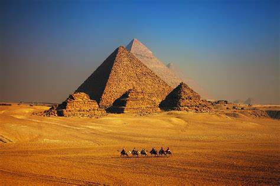 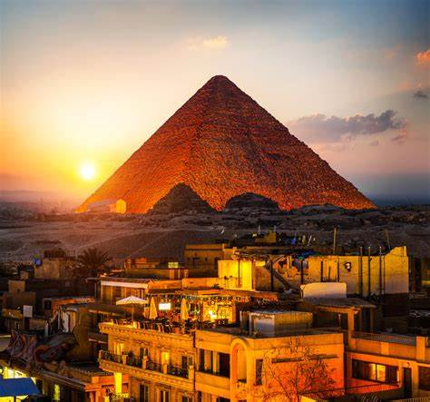 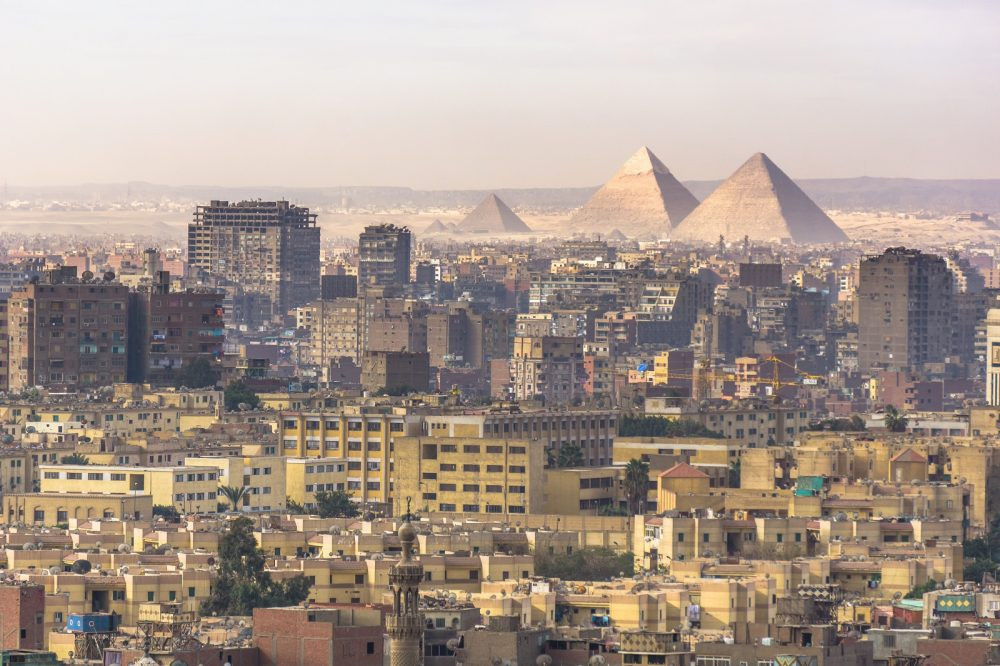 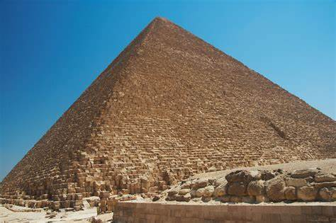The Giza Zoo, also known as the Zoological Garden of Giza, is a large public zoo located in Giza, Egypt. It was first opened in 1891 and is one of the oldest and largest zoos in Africa. The zoo covers an area of over 80 acres and is home to more than 4,000 animals from around the world, including mammals, birds, reptiles, and fish. Some of the most popular animals at the Giza Zoo include lions, tigers, giraffes, elephants, hippos, and crocodiles. In addition to its animal exhibits, the Giza Zoo also features a botanical garden, a children's playground, and a museum of natural history. Visitors can enjoy guided tours, animal shows, and educational programs for children and adults. While the Giza Zoo has faced criticism for its treatment of animals in the past, it has taken steps in recent years to improve animal welfare and conservation efforts. The zoo remains a popular attraction for both locals and tourists, offering a unique opportunity to see a wide variety of animals up close.
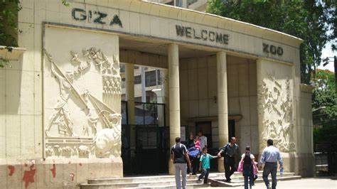 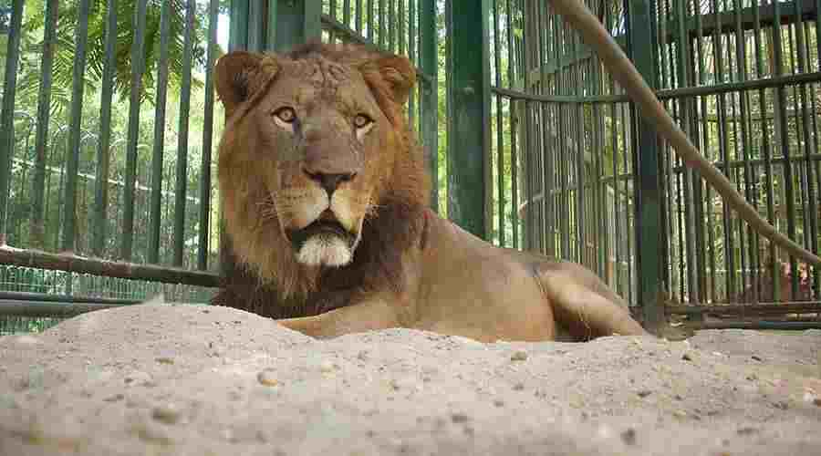 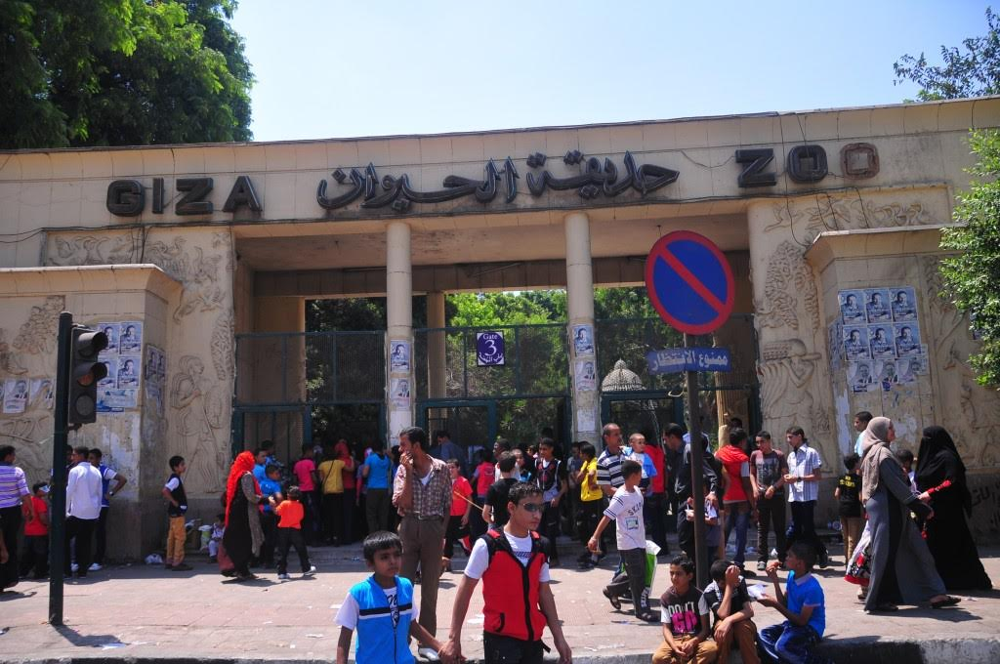 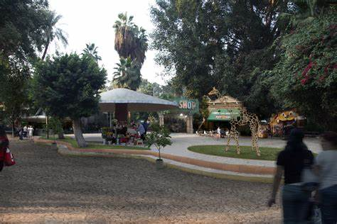Dubai is a city located in the United Arab Emirates (UAE) and is known for its luxurious shopping, modern architecture, and vibrant nightlife. It is situated on the southeast coast of the Persian Gulf and is one of the fastest-growing cities in the world. Dubai is home to many iconic landmarks such as the world's tallest building, the Burj Khalifa, and the Palm Jumeirah, an artificial island in the shape of a palm tree. The city also has a diverse and multicultural population, with many expats from around the world living and working there. Dubai is a popular tourist destination, attracting visitors with its modern attractions, luxury hotels, and beautiful beaches.
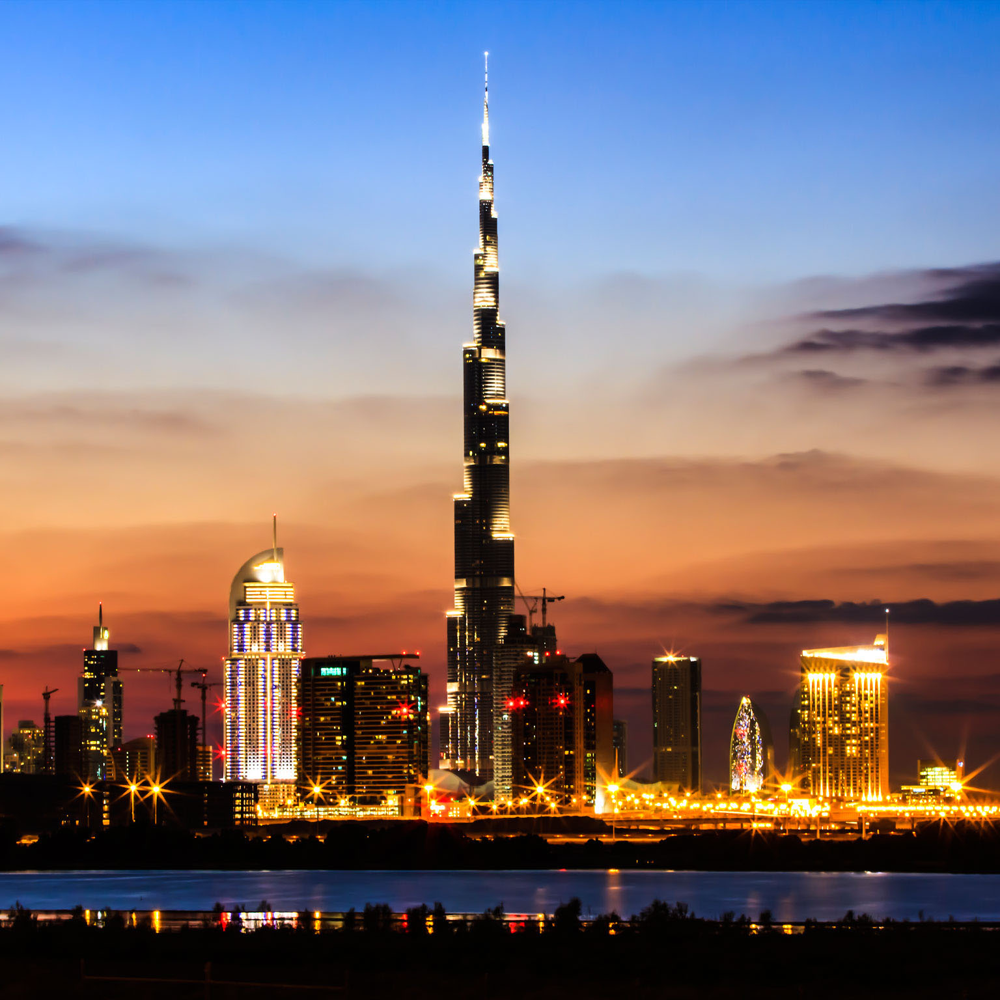 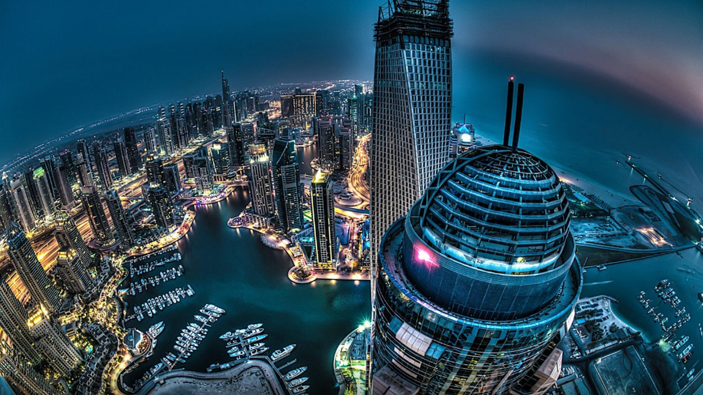 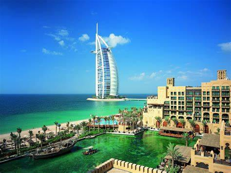 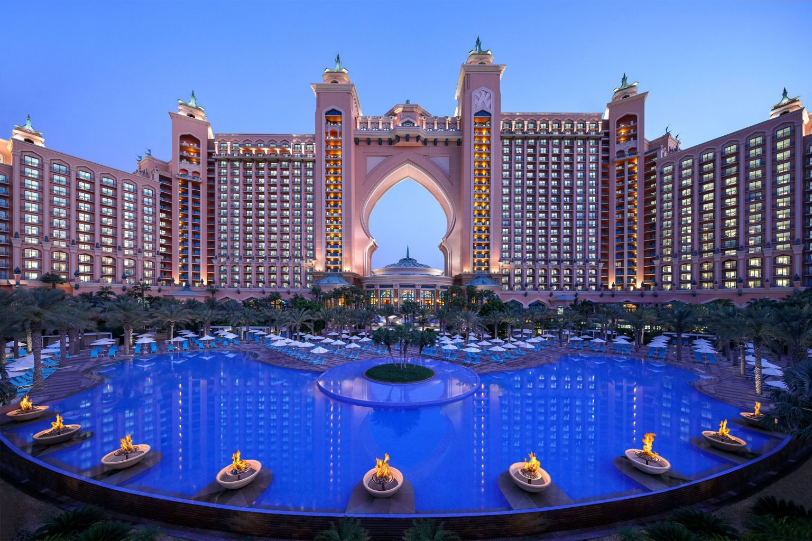Paris is the capital city of France and is known for its beautiful architecture, rich history, and vibrant culture. It is located in the north-central part of the country, along the banks of the Seine River. Paris is famous for its many iconic landmarks, including the Eiffel Tower, the Louvre Museum, and Notre-Dame Cathedral. The city is also renowned for its fashion, art, and cuisine, with numerous cafes, restaurants, and markets offering a taste of French culture. Paris is a major tourist destination, attracting millions of visitors each year who come to explore its many museums, galleries, and historical sites, as well as to experience its unique atmosphere and romantic charm. Below are some images of Paris:
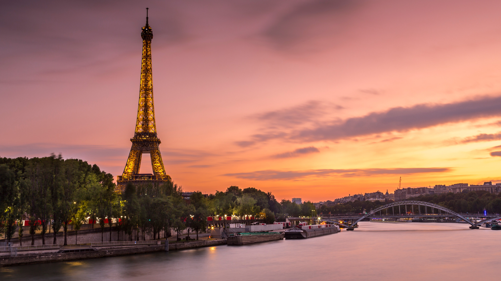 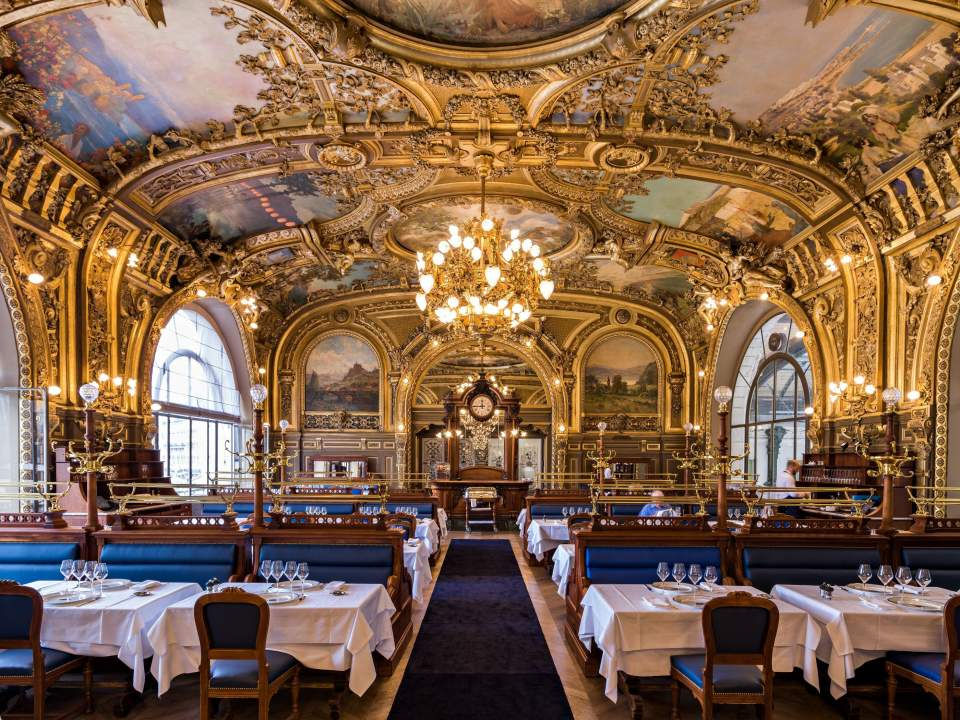 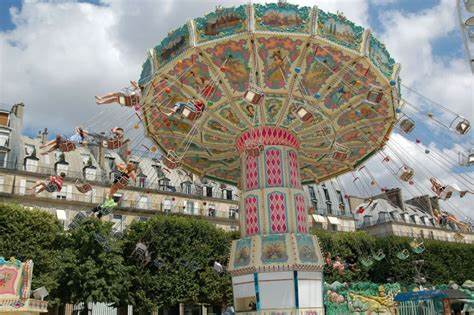 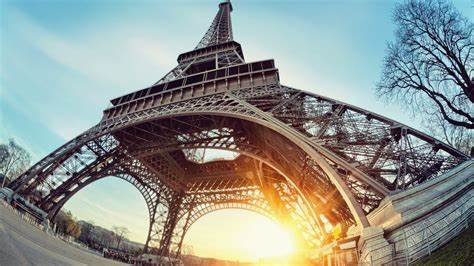